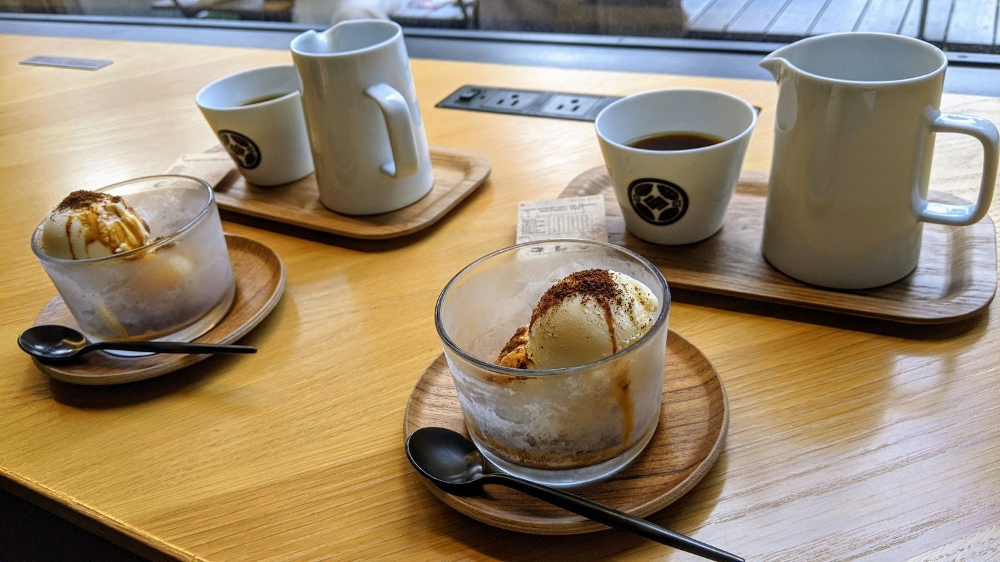
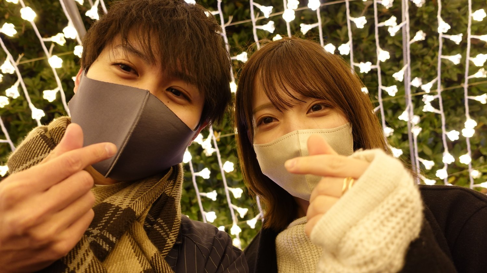
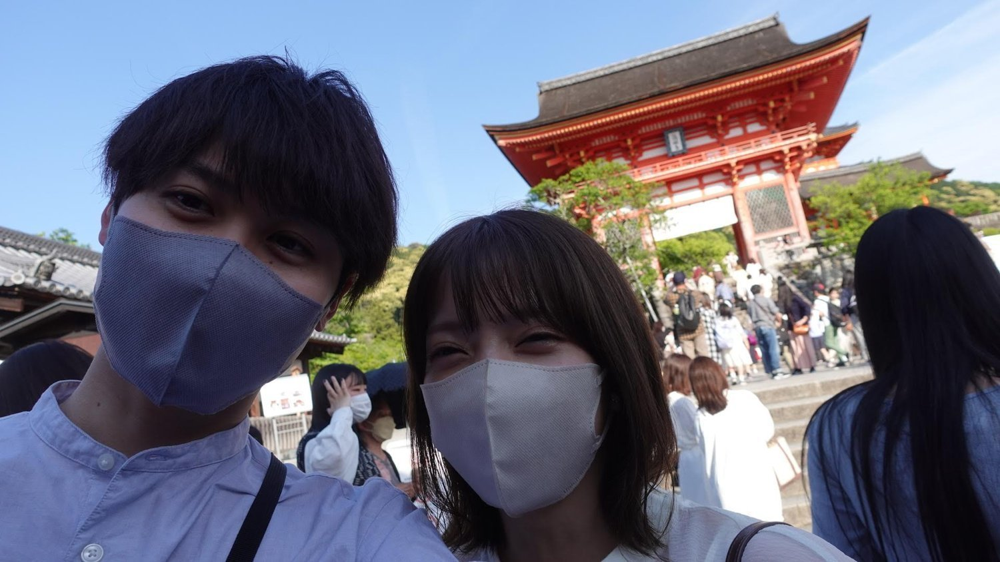
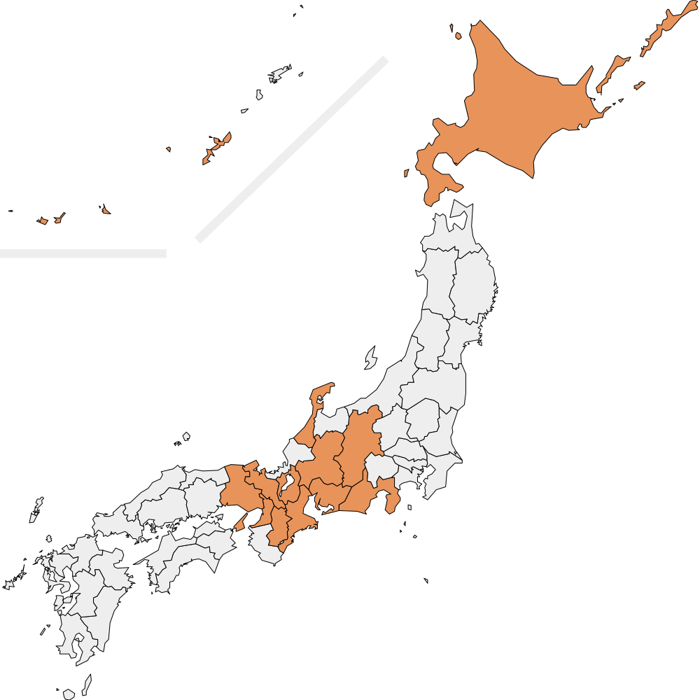
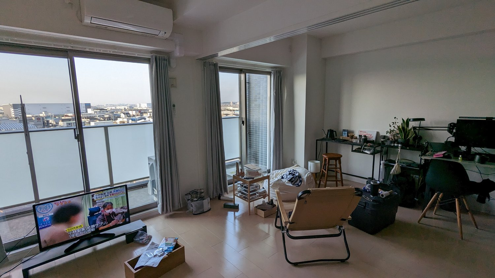
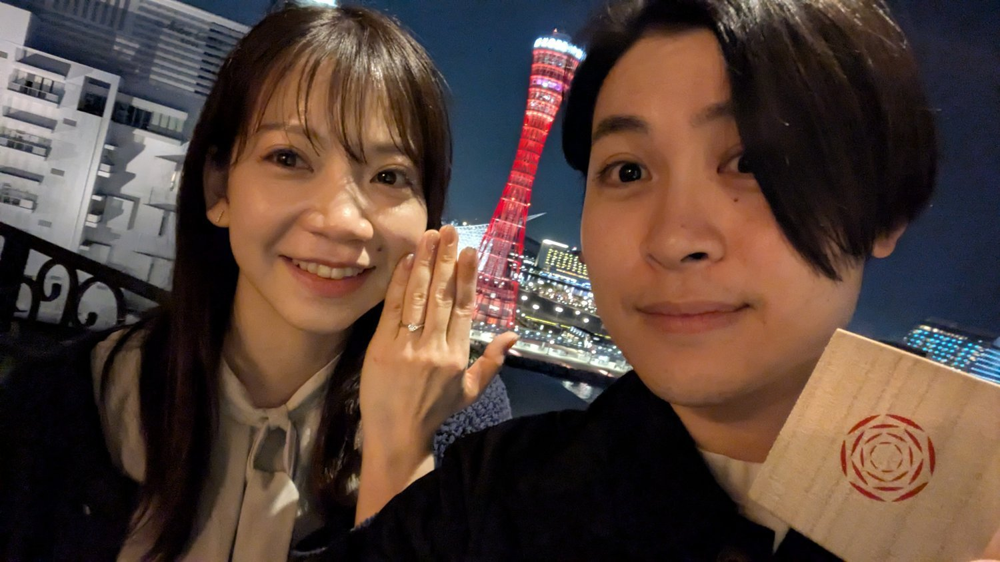
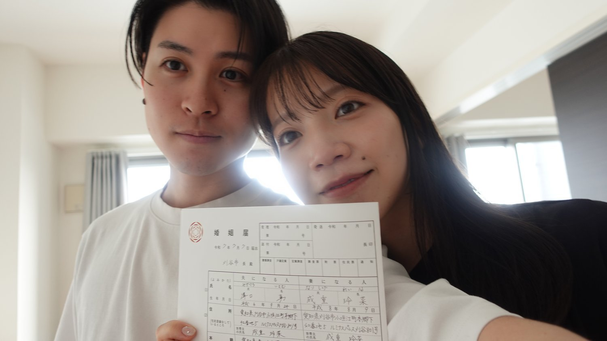
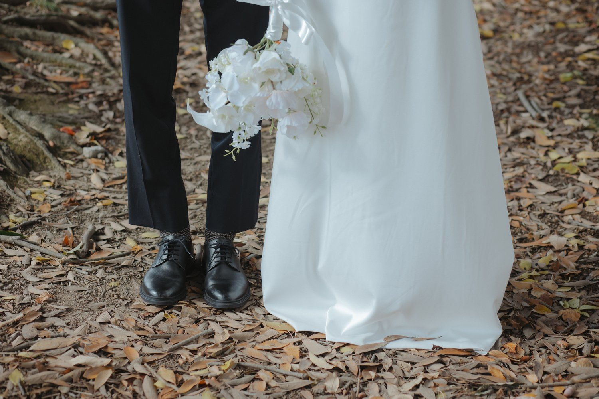

Our Story二人のあゆみ
2021年12月
はじめての出会い

共通の友人の紹介で
スペシャリティコーヒーが自慢のカフェで初めて会いました
好きな漫画の話で盛り上がり
気づけばあっという間に時間が過ぎていました
「また会いたい」と自然に思えた
そんな出会いでした
2021年12月25日
交際スタート — なばなの里で

クリスマスに三重県のなばなの里へ
色とりどりのイルミネーションに包まれながら
勇から想いを伝えました
毎週末
勇が刈谷から守山まで1時間以上かけて迎えに行くのが
二人のリズムになりました
2022年5月〜
二人で巡った日本

カップルとして初めての旅行は京都へ
お寺を巡ったり 抹茶スイーツを食べ歩いたり
一緒にいるだけで楽しくて
二人の距離がぐっと縮まった旅に
そこから北海道 沖縄 軽井沢
金沢…と気づけばたくさんの場所を二人で訪れていました
二人で訪れた都道府県

2024年3月
同棲スタート

交際から約2年 一緒に暮らし始めました
毎日の「おかえり」と「いってらっしゃい」が当たり前になって
二人の生活のリズムが少しずつ重なっていきました
2025年3月21日
プロポーズ — 神戸にて

神戸旅行の夜
ポートタワーの夜景が一望できるホテルの部屋で
勇から玲菜へプロポーズ
2025年7月7日
入籍

令和7年7月7日 —
「7」が三つ並ぶこの日に婚姻届を提出しました
なかなか巡り合えない縁起の良い日付に
二人の新しいスタートを刻みました
2026年 5月16日
結婚式 🎊

そして今日
皆様に見守られながら二人は夫婦となりました
これからも二人で笑顔あふれる毎日を積み重ねていきます